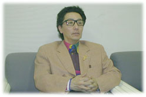

|
──ふだんは美術作品を作っている森村さんが芝居や映画に出るときいて、驚いた人が多かったと思います。出演依頼があったとき、迷われませんでしたか？
辻さんも蜷川さんも、ぼくのいる世界とは全く違う考えをもって出演を依頼してきたんです。「なるほど、ぼくが美術の世界でやってることに対して、そういう見方もあるんだな」というおもしろさがあった。美術評論家が言ってくれることと全くちがう見え方があって、それが映画なり舞台なりに反映されていく。これはやっても悪くないな、という気持ちになって引き受けたんです。
──芝居のときは、稽古と公演を通して３カ月間、東京・神泉のウィークリーマンションに滞在して、渋谷の稽古場に通われたそうですね。
お芝居ってほんとに不思議な世界で、まるで会社員のような生活なんです。お稽古が午後１時からだったら、とにかく全員が１時に集合する。揃ってないとはじめられないんですよ。どんなわがままな女優さんも、必ずいないといけない。終ったらサッと帰り、それでまた次の日来る。ものすごく規則正しいんです。映画との大きい違いはそこにあります。映画はものすごいイレギュラーなスケジュールが続きますから。衣装やかつらを着けたまま７時間くらい待ったときもある。映画は体に悪い。
──肉体的にもハードなんですね。映画で共演者に腕を引っぱられるシーンの撮影中、熱演しすぎて腕がはれあがったというエピソードにはびっくりしました。
そういうことは、さほど珍しいことではなさそうですよ。大杉漣なんかすごい。いろんな役をやって、例えば廃液に浸かったりするようなことも平気でこなす、壮絶な俳優業をやってはる。役者業が好きなんですね。ぼくはあんなに一徹にやってるわけじゃないんですけど、それでもケガはつきものです。「パンドラの鐘」でも、舞台の奥の階段を降りていって、客席からだんだん見えなくなるという設定だったのに、つまずいて階段から転がり落ちてしまった。観客には「あ、森村さん消えた」と言われました（笑）。ケガして病院にいきましたよ。
──本書の蜷川幸雄さんの発言の中には、たとえば野田秀樹さんに対する言葉など、こんなことまで書いてしまっていいのかな、と心配になるところもありました。
蜷川さんの生の声を書いた本は、あまりないんじゃないかな。稽古したその日のうちに書いているから、まずまちがったことは書いていない。自分で言うのもなんですが、この本は蜷川さんの演出のスタンスがわかる優れた蜷川論になっていると思います。演劇に興味を持っている人にぜひ読んでもらいたい。役者になりたい人とか、演出家とか。芝居を見るのが好きな人が読むと、さらにおもしろいんじゃないかと思いますね。
──役者さんたちの稽古着とか、業界用語とか、はじめて入った世界で森村さんが注目するポイントがおもしろかったです。
演劇界の人にとって当たり前のことも、ぼくにとっては当たり前じゃない。たとえば「おはよう問題」というのがあります。みんな夜７時でも「おはよう」と挨拶するのは、いったいなぜなのか。そうやって違和感を感じることから考えていきました。馴染んでしまうとわからないことってあるんですよ。でも、馴染まないからといって外に出てしまったら、その世界がわからない。馴染みつつ、馴染んでいない自分も感じていく。そこはちょっと大人になったかな。昔だったら「自分の世界じゃない」と断っていた。

──映画「フィラメント」の撮影では、最初は演技に苦労されたようですが、いかがでしたか。
映画に出てくださいと言われて、いきなり稽古もなく、「ハイ本番、パチン」とやられたら、だれだって困りますよ。もう、出たとこ勝負で、「いてまえ〜！」みたいなかんじでやるんです。やっているうちに、だんだんまわりの人のやり口がわかってくる。
あるシーンで、共演の大沢たかおさんをチラッと見たら、すごい怖い顔してるんですよ。井川遥さんも一生懸命やっていて、真剣な顔で雨に濡れてビショビショになってる。フィクションですからね、アホらしいっていえばアホらしい光景なんですよ。大の大人が、わけのわからないバカげたことをしながら、みんなでひとつのゴールに向って進むんですよ、映画って。監督の辻仁成もそこが好きなんだと思う。
このまえ映画監督の青山真治さんと黒沢清さんにお会いしたんですけど、彼らはほんとに映画が好きで、８ミリを自分で動かして撮り始めたような、映画から出てきたような人たちでした。辻仁成はそういうタイプではなくて、映画を愛しているというより、作っていくときに「辻組」がガーッとひとつに動いていく感覚がこたえられないんだと思う。結構体育会系なんです。
──銀粉蝶さん扮する奥さんとお茶を飲むシーンで、談笑していた銀粉蝶さんが急に撮影モードに切り替わったのをみて、森村さんがあわてるという裏話が、すごくおかしかったです。
素人だからわかる役者業の一面もあるんですね。現実との違い、ズレがあるでしょ。それがおもしろい。ひずみから見えてくる部分がある。『女優家Ｍ 演技の花道』がおもしろいとすれば、そこだと思います。役者さんが書いてるものとはちょっと違う角度から見た映画とお芝居の世界。もうひとつのストーリーみたいな感じなんです。
──芝居と映画の体験を１冊の本にまとめて、どんなことを感じられましたか。
この本を書いて最終的に思ったのは、人間は演技するようにできている動物だな、ということです。みんな最初から今の自分だったわけじゃなくて、キャラクターをだんだん作っていくでしょう？ 人の真似をしたり、こういうことを言ったら人が笑うだろうとか試していって、イケたものを採用していく。その積み重ねで自分なりのキャラクターを作っていく。それはまさに演技の世界です。みんながなぜお芝居や映画が好きかというと、日常生活の中ですでにしていることを、舞台やスクリーン上で改めてやっているからでしょう。映画や芝居にリアリティーを感じられるベースをみんなが持っているんですよ。そこを専門職にしてるのが俳優です。ぼくはそんな上手じゃないから俳優業を続けていくという気はないです。
──写真、映像、芝居、そして最近は作曲やピアノ演奏まで、さまざまな表現に取り組んでおられますが、書籍はこれが７冊目になります。森村さんにとって書くこととは何ですか。
文章は一人でいないと書けない。ぼくは一人でいるのは苦痛じゃないから、そういう意味では、自分にとって文章は快適なものです。文章を書くときは、原稿用紙を使わず、ワープロとかなんですが、そういうぼくのやり方は絵を描くのに近いんです。それも、キャンバスを上から順番に塗っていって下までいって完成するかんじではなくて、はじめに大きな下書きをしてから、削ったり入れ替えたりゴチャゴチャ手を加え、「あ、できた。これで決まりかな」と、だるまに両目を入れるようにして終るんです。文章はやり直しがききます。トークショーの場合は、１回言うたことは取り消しきかないでしょ。あとから「こう言うたらよかったのに……」とか思うけど、文章は全部一人でやれる。そのほうが自分にとっては快適ですね。
|